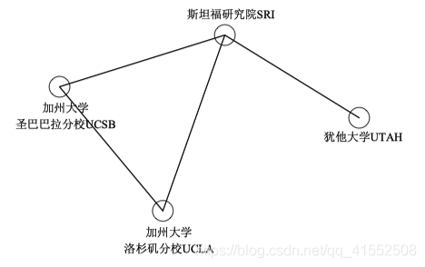

网络系统的发展演变
互联网发展史
1.互联网起源(1955-1970s 初期)
(1).起源:1957.10 前苏联发布第一颗人造地球卫星，直接促使美国国防部在 1958.2 成立了ARPA (高级研究计划署 - Advanced Research Projects Agency)，即之后的 DAPRA (国防部高级研究计划署)。
(2).ARPA的使命:为保卫国家安全的技术突破而做关键性的投资，不以满足军方的现实需求为目标，而是感知军方的未来潜在的需求，探索国防科技。曾经推动的重要项目：BMP、波音 X-37、GPS、ARPANET
1969年，ARPA 推出了 ARPANET，即 Internet 的前身。一开始的 ARPANET 包括四个主要节点。
ARPANET 的主要技术特点 —— 采用了包交换 (分组交换技术)，完全不同于当时最主要的通信系统 (电话网络) 所采用的电路交换技术。
(3).分组交换技术:让 ARPANET 具备抗毁性。即传输节点在失效后，独立寻径的那些包可以找到其他的路径到达对方。执行分组交换的设备 —— IMP (接口报文处理器 - Interface Message Processor)
2.Internet 的形成
(1)TCP/IP协议的诞生
瑟夫、凯恩、柏兰登等人一起发明了互联网的骨干协议 TCP/IP。当今互联网的主要特点 —— TCP/IP 协议簇的形成和应用。
(2)互联网正式诞生:1981年，CSnet (计算机科学网络) 成立，第一次实现了两网互连，标志着互联网正式诞生。
3.互联网普及
技术储备:个人电脑的出现 (鼠标的使用),视窗操作系统的出现,浏览器的诞生
1989年，Tim Berners Lee 成功开发出世界上第一个 Web 服务器和第一个 Web 客户机。World Wide Web 就此诞生。
中国的互联网络历史
1987.9.20，从北京向德国卡鲁厄尔大学发送了第一封邮件，标志着中国人使用 Internet 的起点。
邮件历时一周，邮件内容 "Across the Great Wall we can reach every corner in the world !"。
1994.4.20，中国实现了与 Internet 的全功能连接。至此中国实现与互联网的完全对接。